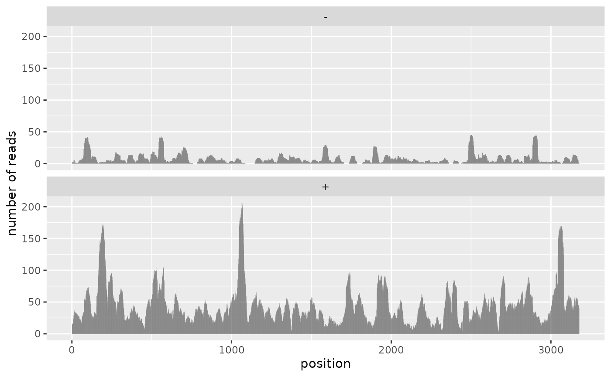
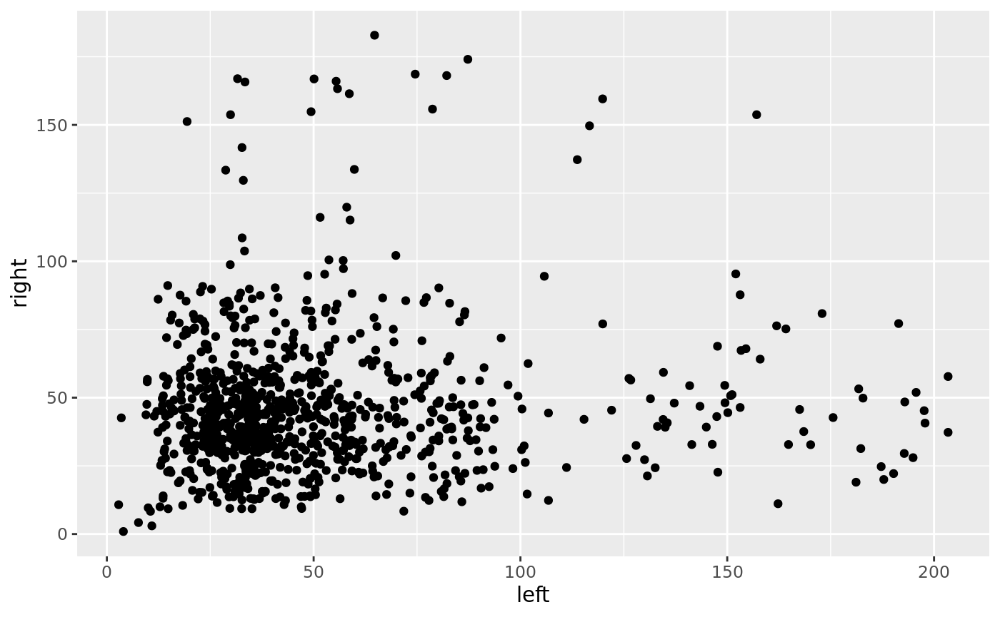

sam_file <- system.file('extdata', 'Neat1_1.Aligend_trunc.sam', package = 'paristools')
mapping <- paristools::read_sam(sam_file)
mapping
#> # A tibble: 4,996 x 11
#> QNAME FLAG RNAME POS MAPQ CIGAR RNEXT PNEXT TLEN SEQ QUAL
#> <chr> <int> <chr> <int> <int> <chr> <chr> <int> <int> <chr> <chr>
#> 1 ST-E003… 0 neat1 2691 255 8S20… * 0 0 TCGTCC… JJAJFA…
#> 2 ST-E003… 16 neat1 388 255 4S31M * 0 0 ACTCGG… <-FF<A…
#> 3 ST-E003… 0 neat1 1653 255 2S32M * 0 0 TTGAGG… A<F<-A…
#> 4 ST-E003… 0 neat1 3043 3 5S38M * 0 0 ATTCCA… JJJJJJ…
#> 5 ST-E003… 256 neat1 2534 3 5M50… * 0 0 ATTCCA… JJJJJJ…
#> 6 ST-E003… 0 neat1 2979 255 24M9S * 0 0 TTTTGT… JJJJJF…
#> 7 ST-E003… 0 neat1 2995 255 41M * 0 0 AAAAGT… JJJJJJ…
#> 8 ST-E003… 0 neat1 184 255 1S29M * 0 0 ATCCAA… JJJJJJ…
#> 9 ST-E003… 0 neat1 227 3 26M7… * 0 0 AGACCA… JFJJJJ…
#> 10 ST-E003… 256 neat1 227 3 27M6S * 0 0 AGACCA… JFJJJJ…
#> # … with 4,986 more rowsduplexgroup_file <- system.file('extdata', 'Neat1_1.duplexgroup', package = 'paristools');
duplex_group <- paristools::read_duplexgroup(duplexgroup_file)
duplex_group
#> # A tibble: 15,964 x 8
#> chrom strand start end pair type id score
#> <chr> <chr> <int> <int> <chr> <chr> <chr> <dbl>
#> 1 neat1 + 1 15 left genome 0 0.01
#> 2 neat1 + 40 50 right genome 0 0.01
#> 3 neat1 + 1 15 left read 0 0.01
#> 4 neat1 + 1 19 left read 0 0.01
#> 5 neat1 + 40 69 right read 0 0.01
#> 6 neat1 + 27 50 right read 0 0.01
#> 7 neat1 + 1 15 left genome 1 0.012
#> 8 neat1 + 303 316 right genome 1 0.012
#> 9 neat1 + 1 15 left read 1 0.012
#> 10 neat1 + 1 16 left read 1 0.012
#> # … with 15,954 more rowsrefer to read_bed()
loc_df <- mapping %>% paristools::sam_to_loc_df()
loc_df
#> # A tibble: 5,859 x 4
#> chrom strand start end
#> <chr> <chr> <int> <int>
#> 1 neat1 + 170 200
#> 2 neat1 + 774 807
#> 3 neat1 + 294 325
#> 4 neat1 + 311 343
#> 5 neat1 + 1032 1063
#> 6 neat1 + 3158 3177
#> 7 neat1 + 2326 2356
#> 8 neat1 - 2493 2529
#> 9 neat1 - 658 685
#> 10 neat1 - 658 683
#> # … with 5,849 more rows
ref_coverage <- loc_df %>% paristools::cal_coverage()
#> Warning: All elements of `...` must be named.
#> Did you want `data = c(strand, start, end)`?
#> Warning: `cols` is now required.
#> Please use `cols = c(data)`
ref_coverage
#> # A tibble: 6,354 x 4
#> chrom strand pos n_reads
#> <chr> <chr> <int> <int>
#> 1 neat1 + 1 14
#> 2 neat1 + 2 15
#> 3 neat1 + 3 15
#> 4 neat1 + 4 15
#> 5 neat1 + 5 16
#> 6 neat1 + 6 17
#> 7 neat1 + 7 17
#> 8 neat1 + 8 20
#> 9 neat1 + 9 23
#> 10 neat1 + 10 24
#> # … with 6,344 more rowsggplot(ref_coverage) +
geom_col(aes(pos, n_reads)) +
facet_wrap(~strand, ncol = 1) +
labs(x = 'position', y = 'number of reads')
dg_coverage <- paristools::get_dg_coverage(duplex_group, ref_coverage)
dg_coverage
#> # A tibble: 1,884 x 6
#> id chrom strand pair n_reads support
#> <chr> <chr> <chr> <chr> <dbl> <int>
#> 1 0 neat1 + left 22.8 2
#> 2 0 neat1 + right 26.1 2
#> 3 1 neat1 + left 22.8 2
#> 4 1 neat1 + right 66.8 2
#> 5 100 neat1 + left 57.6 2
#> 6 100 neat1 + right 38.2 2
#> 7 1000 neat1 + left 56.2 2
#> 8 1000 neat1 + right 50.1 2
#> 9 1001 neat1 + left 58.6 2
#> 10 1001 neat1 + right 43 2
#> # … with 1,874 more rowsdg_coverage %>% dplyr::select(-strand) %>% tidyr::spread('pair', 'n_reads') %>%
ggplot() + geom_point(aes(left, right))
mapping %>% dplyr::mutate(strand = purrr::map_chr(FLAG, paristools:::get_strand))
#> # A tibble: 4,996 x 12
#> QNAME FLAG RNAME POS MAPQ CIGAR RNEXT PNEXT TLEN SEQ QUAL strand
#> <chr> <int> <chr> <int> <int> <chr> <chr> <int> <int> <chr> <chr> <chr>
#> 1 ST-E… 0 neat1 2691 255 8S20… * 0 0 TCGT… JJAJ… +
#> 2 ST-E… 16 neat1 388 255 4S31M * 0 0 ACTC… <-FF… -
#> 3 ST-E… 0 neat1 1653 255 2S32M * 0 0 TTGA… A<F<… +
#> 4 ST-E… 0 neat1 3043 3 5S38M * 0 0 ATTC… JJJJ… +
#> 5 ST-E… 256 neat1 2534 3 5M50… * 0 0 ATTC… JJJJ… +
#> 6 ST-E… 0 neat1 2979 255 24M9S * 0 0 TTTT… JJJJ… +
#> 7 ST-E… 0 neat1 2995 255 41M * 0 0 AAAA… JJJJ… +
#> 8 ST-E… 0 neat1 184 255 1S29M * 0 0 ATCC… JJJJ… +
#> 9 ST-E… 0 neat1 227 3 26M7… * 0 0 AGAC… JFJJ… +
#> 10 ST-E… 256 neat1 227 3 27M6S * 0 0 AGAC… JFJJ… +
#> # … with 4,986 more rows